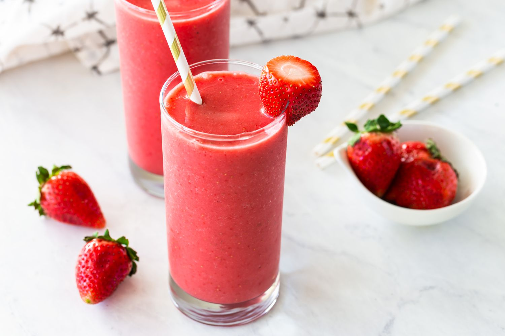

Fruit Smoothie
Home

Since the first time I had this in Seoul, South Korea, I have Bibimbap!
I especially love how easy it is to make, and how you can really customize it to whatever ingredients you have at home.
Ingredients
- 1 cup vanilla yogurt
- 1 cup frozen strawberries
- 1 frozen banana
- 1/4 cup orange juice
Instructions
- Put all the ingredients in a blender.
- Blend until smooth.
- Serve in a glass, adding garnish as per preference.